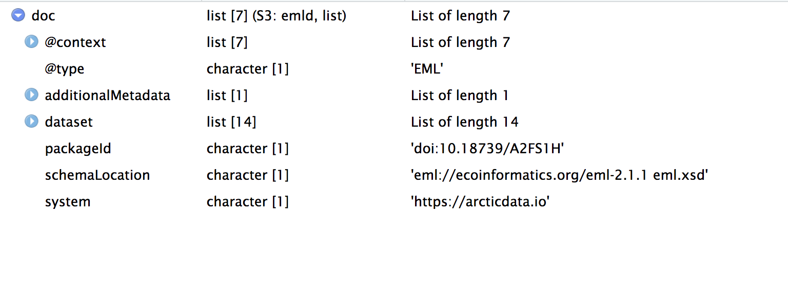
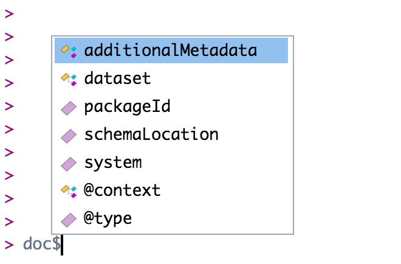

Navigate through EML
The first task when editing an EML file is navigating the EML file. An EML file is organized in a structure that contains many lists nested within other lists. The function View allows you to get a crude view of an EML file in the viewer. It can be useful for exploring the file.

The complex EML document is represented in R as as series of named, nested lists. We use lists all the time in R! A data.frame is one example of a special kind of list that we use all the time. You may be familiar with the syntax dataframe$column_name which allows us to select a particular column of a data.frame. Under the hood, a data.frame is a named list of vectors with the same length. You select one of those vectors using the $ operator, which is called the “list selector operator.”
Just like you navigate in a data.frame, you can use the $ operator to navigate through the EML structure. The $ operator allows you to go deeper into the EML structure and to see what elements are nested within other elements. However, you have to tell R where you want to go in the structure when you use the $ symbol. For example, if you want to view the dataset element of your EML you would use the command doc$dataset. If you want to view the creators of your data set you would use doc$dataset$creator. Note here that creator is contained within dataset. If you aren’t sure where you want to go, hit the tab button on your keyboard after typing $ and a list of available elements in the structure will appear (e.g., doc$<TAB>):

Note that if you hit tab, and nothing pops up, this most likely implies that you are trying to go into an EML element that can take a series items. For example doc$dataset$creator$<TAB> will not show a pop-up menu. This is because creator is a series-type object (i.e. you can have multiple creators). If you want to go deeper into creator, you first must tell R which creator you are interested in. Do this by writing [[i]] first where i is the index of the creator you are concerned with. For example, if you want to look at the first creator i = 1. Now doc$dataset$creator[[1]]$<TAB> will give you many more options. Note, an empty autocomplete result sometimes means you have reached the end of a branch in the EML structure.
At this point stop and take a deep breath. The key takeaway is that EML is a hierarchical tree structure. The best way to get familiar with it is to explore the structure. Try entering doc$dataset into your console, and print it. Now make the search more specific, for instance: doc$dataset$abstract.